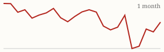
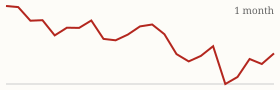

| Today's briefing for operators |
Top line: Home prices drop nationally for first time in 3 years |
|
| Thursday, November 12, 2026 | Late Edition | Curated from 63 voices on X |
|
Real Estate
Home Prices Drop Nationally for the First Time in Over Three Years
Pending sales are at a 13-year low and homes are sitting longer, which hands buyers real negotiating leverage for the first time in years.
By @BiggerPockets |
BiggerPockets flags that national home prices just dipped for the first time in more than three years. Pending sales have hit a 13-year low, days on market are stretching out, and buyers can finally push back on price. |
For an operator, a softening retail market cuts both ways: sellers get more motivated and negotiable, but exit prices and resale timelines get less forgiving. It's a good week to tighten ARV assumptions, build in longer hold times, and make sure every offer still works if the resale comes in lower. |
|
| Read on X |
|
Mortgage Rates & Markets | Mortgage Rates Today's average lender rates | 30-year fixed | 7.30% | +0.12 | | 15-year fixed | 6.92% | +0.09 |
Daily change vs. prior day. Source: Mortgage News Daily, as of 11/10/2026 (updated weekdays about 4 PM ET). |
|
S&P 500 Close of Wed, Nov 11 S&P 500 7,619.38 ▲ +98.45 (+1.31%)  Yahoo Finance chart data (daily closes) |
|
Nasdaq Composite Close of Wed, Nov 11 Nasdaq Composite 25,466.19 ▲ +400.32 (+1.60%)  Yahoo Finance chart data (daily closes) |
|
| Real Estate & Deals | Chart of Salt Lake City metro listings hitting a 10-year high. Image via @nickgerli1 on X Salt Lake City Inventory Hits a 10-Year Record By @nickgerli1 Nick Gerli says metro Salt Lake City listings topped 4,000 in October, 43% above the long-term average and a 10-year high. It's one more market where supply is piling up and pricing power is shifting to buyers. Read on X |
Construction Speed Is the Real Flipping Moat By @Jacob_Naviaux Naviaux says the hardest part of flipping is the renovation, and he can buy at volume only because he trusts his ability to rehab fast and relist. He sees zero signs the market improves soon, so he's sticking with steady buying and selling rather than waiting. Read on X |
Maccini Trades Cheaper Callers for One Fluent Pro By @NickMaccini Maccini replaced a team of $3/hour offshore cold callers with a single experienced caller who speaks fluent, natural American English, betting one strong rep will match or beat the group. A useful test of caller quality over headcount. Read on X |
AI Can Find Off-Market Deals, but It Takes a System By @coleruudjohnson Cole Ruud-Johnson says AI can absolutely surface off-market deals, but it takes more than spinning up a bot and copying a post you saw on X. The work is in the data, the process and the follow-up behind it. Read on X |
| AI Briefing | Anthropic Announces Its Initial Public Offering By @AnthropicAI Anthropic posted its IPO announcement this morning and says it has filed a registration statement with the SEC. It's the biggest AI listing yet and will put a public price on one of the main labs behind Claude. Read on X |
Google DeepMind AlphaProof Code announcement. Image via @GoogleDeepMind on X DeepMind's AI Proves Signal's Encryption Is Secure By @GoogleDeepMind Using its AlphaProof Code framework, Google DeepMind says AI has mathematically verified Signal's cryptographic protocol down to the code for the first time. DeepMind also released AlphaGenome 2, which pinpoints how DNA changes drive disease in specific cells. Read on X |
Gemini Comes to Apple CarPlay By @GeminiApp You can now pick up a Gemini conversation from your phone on the CarPlay screen and brainstorm out loud with Gemini Live. Handy for turning drive time between properties into thinking time. Read on X |
Report on Nvidia's CEO search. Image via @kimmonismus on X Nvidia's Board Weighs Replacing Jensen Huang By @kimmonismus Bloomberg reports Nvidia's board is working with an outside firm on possible CEO replacements after a New York Times report on a second relationship with a subordinate executive; Semafor says CFO Colette Kress is favored as interim CEO. Nvidia stock slid after hours. Read on X |
Diamandis: AI Diagnosed 83% of Hard Cases vs. 36% for Doctors By @PeterDiamandis Peter Diamandis points to Microsoft's diagnostic AI solving 83% of 304 complex New England Journal of Medicine cases, compared with 36% for generalist physicians. His push: get it into clinics safely and fast. Read on X |
Most People Need Basic Prompts, Not Agents By @Sabrina_Ramonov Sabrina Ramonov says 30-minute calls with her audience showed most people needed simple prompts and tips, not AI agents. A good reminder when rolling AI out to a team: start with the basics. Read on X |
| Business & Leadership | If You Rarely Lose, You Rarely Try By @danmartell Dan Martell warns against being proud of a low loss rate, because it usually means you aren't taking enough shots. Leaders should reward smart attempts, not just clean records. Read on X |
What Building Your Own Thing Does to You By @danmartell Martell's short list: you stop asking for permission, stop living for Fridays, and become unemployable. Worth remembering when hiring people who think like owners. Read on X |
Use the IKEA Effect By @gregisenberg Greg Isenberg notes people value things up to 63% more when they helped build them. Let customers, partners and team members shape the work and they'll care more about it. Read on X |
|
The Hyre Times is compiled each morning by Groky from public posts on X plus public rate and market data. Summaries reflect the authors' own claims and have not been independently verified. Not financial advice. © 2026 Hyre Times. |
|